Harry K. Stoltz
Definition 4.1.1.
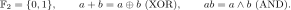
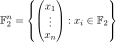
bit string
Definition *1.
\(\CNOT\) is the PROP of circuits generated by CNOT, identity wires, and wire permutations.
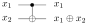
Write \(c_{ij}\) for control \(i\), target \(j\).
Identities. CNOT is self-adjoint and unitary. Its circuit identities and ZX representation are:
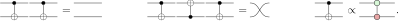
Definition 4.1.2. Parity map
A map \(f:\F^n\to\F^m\) is a parity map if each output is the sum in \(\F\) of a subset of the input bits.
Definition 4.1.4. Parity matrix
A parity matrix has entries in \(\F\). The matrix of \(f\) is given by \(A_{ji}=1\) iff output \(j\) includes input \(i\). Hence \(f(x)=Ax\).
Example. Parity map
Example. CNOT
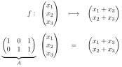
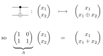
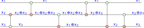
Proposition 4.1.3.
Every CNOT circuit \(C\) on \(n\) wires implements a parity map \(x\mapsto Ax\) for an invertible parity matrix \(A\in\F^{n\times n}\).
Definition *6.
For \(i\ne j\), the elementary parity matrix \(E_{ij}\) is the \(n\times n\) identity matrix with an additional \(1\) in row \(j\), column \(i\).
It adds bit \(i\) to bit \(j\) and leaves every other bit unchanged.
Example. Three wires, control 1 and target 3.
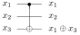
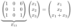
Theorem 4.1.7.
For every invertible \(n\times n\) parity matrix \(A\), Algorithm 1 returns a CNOT circuit implementing \(A\).
Algorithm 1. CNOT synthesis by Gaussian elimination
Given an invertible \(n\times n\) parity matrix \(A\), record these row additions:
https://www.statlect.com/matrix-algebra/Gaussian-elimination
Same as usual gaussian elimination, but:
In \(\F\), addition is XOR and nonzero pivots are \(1\), so we do not rescale rows.
If a pivot is \(0\), we add a row instead of swapping rows.
We clear above and below the diagonal to get \(I\) (Gauss–Jordan elimination).
We read off the CNOTs in reverse order to get a circuit for \(A\).
Generators and interpretation
A phase-free ZX diagram is generated by the following spiders and structural maps.
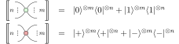
\(\left(\ket0=\begin{pmatrix}1\\0\end{pmatrix},\quad\ket1=\begin{pmatrix}0\\1\end{pmatrix},\quad\ket\pm=(\ket0\pm\ket1)/\sqrt2\right)\)
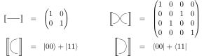
Wire bending and the following equations define the calculus.
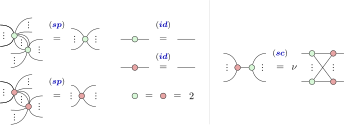
In (sc), \(\nu=2^{(n-1)(m-1)/2}\). Throughout, nonzero overall scalars are ignored, as in the chapter.
Definition *3. Unitarity
A diagram \(D:n\to m\) is called unitary if the following holds:
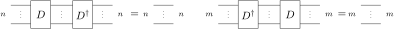
Definition *7. Dagger
Given a diagram \(D:n\to m\), we define its dagger \(D^\dagger:m\to n\) by flipping it horizontally:
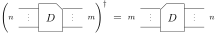
Definition 4.2.2.
A PNF has one Z-spider per input and one X-spider per output, each with exactly one boundary wire. All other wires join opposite colours, at most once per pair. There are no other spiders or components.
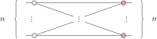
Definition *4.
We define the biadjacency matrix \(A=(A_{ji})\) by \(A_{ji}=1\) iff input Z-spider \(i\) is connected to output X-spider \(j\). Write \(P(A)\) for this diagram. Columns are inputs and rows are outputs.
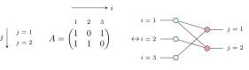
Definition 4.2.4.
A diagram is two-coloured if no two spiders of the same colour are connected, and there are no self-loops, parallel wires or Hadamards.
Example.
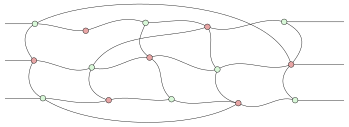
Lemma *4.2.5.
Every phase-free ZX diagram can be efficiently simplified to a two-coloured one.
Proof.
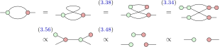
Their endpoints have different colours, so the rule applies. Each step decreases the number of spiders or wires.
Definition 4.2.6.
A spider is an input or output spider if connected to an input or output, respectively. It is internal if it is neither.
Definition 4.2.7.
A two-coloured diagram is in GPF when:
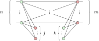
Here \(j\) counts internal X-spiders and \(k\) counts internal Z-spiders. PNF has \(j=k=0\).
Start with a two-coloured phase-free diagram.
Algorithm 2.
Start with a two-coloured phase-free diagram.
Lemma 4.2.8.
Algorithm 2 terminates efficiently with a diagram in GPF.
Proof.
Algorithm 2.
Start with a two-coloured phase-free diagram.
Lemma 4.2.8.
Algorithm 2 terminates efficiently with a diagram in GPF.
Proof (continued).
Proposition 4.2.9.
If a GPF diagram is proportional to an isometry, then \(j=0\); if proportional to a unitary, then \(j=k=0\). In particular, a unitary in GPF is already in PNF.
Proof.
Suppose an internal X-spider exists. Its neighbours are input Z-spiders. Put \(\ket1\) on one of these inputs and \(\ket0\) on all other inputs. The Z-spiders copy the bits, so this internal spider evaluates to
Thus a nonzero input is sent to zero, contradicting isometry. Hence \(j=0\).
Similarly, an internal Z-spider has only output X-spiders as neighbours. Put \(\bra-\) on one of these outputs and \(\bra+\) on all others. Copying these effects backwards gives
This gives a nonzero covector \(\eta\) with \(\eta D=0\), contradicting invertibility. Hence \(k=0\).
Theorem 4.2.10.
Any unitary phase-free ZX diagram can be efficiently rewritten in PNF.
Proof.
First use Lemma 4.2.5 to reduce it to two-coloured form. Then apply Algorithm 2 to reduce it to GPF. It is proportional to a unitary, so Proposition 4.2.9 makes it PNF.
Lemma *4.5.
A PNF is proportional to a unitary iff its biadjacency matrix \(A\) is square and invertible.
Proof.
On a basis input \(\ket x\), Z-spiders copy the bits and X-spiders compute their parities. The scalar factors depend only on the numbers of wires, so
If \(A\) is invertible, this permutes the basis. Conversely, unitarity forces equal dimensions. If \(A\) were singular, choose \(z\ne0\) with \(Az=0\); then \(\sem{P(A)}(\ket0-\ket z)=0\), contradicting injectivity.
Lemma 4.2.11.
Attaching a CNOT with control \(i\), target \(j\) to a PNF changes its target row by \(r_j\leftarrow r_j+r_i\).
Proof.
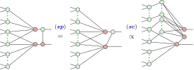
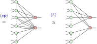
Fusion, strong complementarity, fusion, then Hopf cancel shared connections. The target keeps exactly those present in one row only: row addition over \(\F\).
Proposition 4.2.13.
A PNF with invertible biadjacency matrix can be diagrammatically rewritten into a CNOT circuit.
Proof.
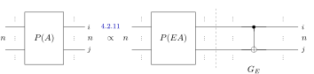
Each new gate is inserted immediately after the remaining PNF.
EX.
The diagram to the left of the dashed line stays in PNF, with the row-reduced matrix:
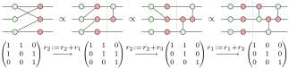
Theorem 4.2.14.
Any unitary phase-free ZX diagram can be efficiently rewritten into a CNOT circuit.
Proof.
Corollary *5. Up to nonzero scalar.
For every CNOT circuit \(C:n\to m\), there is a phase-free diagram \(D:n\to m\) with \(\sem D\propto\sem C\).
Proof.
Replace each CNOT by its phase-free diagram, and keep the same wiring:
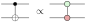
Composition and tensor product preserve proportionality.
\(*\) marks an added or specialised statement. Adapted from Kissinger–van de Wetering, Picturing Quantum Software, Chapters 3–4 (CC BY-NC 4.0).
https://zxcalc.github.io/book/html/main_htmlch4.html